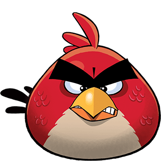

History
Angry Birds was originally an application launched in 2009 by Rovio Entertainment for the Apple smartphones and future tablets. The characters and game concept were created by a man named Jaakko Iisalo from Finland and further designed by Markus Tupperainen and Peter Urbanics. Their ideas soon turned into gold since it suddenly gained a tremendous increase in popularity over the next year, saving Rovio from bankruptcy. Over time, it was recreated for different smartphones, PC's, and video game consoles. To this day, the company has made hundreds of millions of dollars in net profit alone and the app became the most downloaded freemium game of all time. The app itself has been downloaded to various devices over 50 million times. Anyone who owns a smartphone or accesses the internet knows it's name.